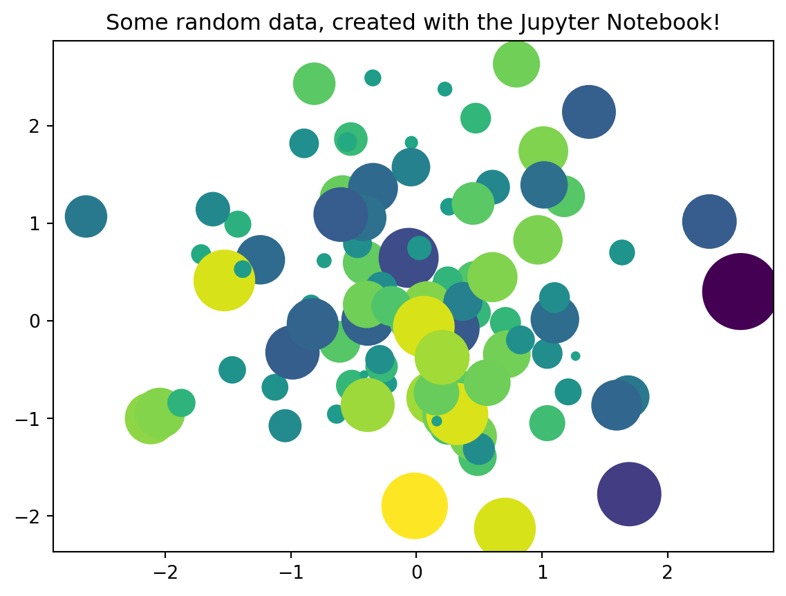

def squared_sum(x,y):
z = x**2 + y**2
return zAppendix A — Introduction to Jupyter Notebook
Jupyter Notebook is a widely used tool in the Data Science community. It is easy to use and the produced code can be run per cell. This has a huge advantage, because with other tools e.g. (pycharm, vscode, etc.) the whole script is executed. This can be a time consuming process, especially when working with huge data sets.
A.1 Different Notebook cells
There are different cells that the notebook is currently supporting:
code cells
markdown cells
raw cells
As a default, every cells in jupyter is set to “code”
A.1.1 Code cells
The code cells are used to execute the code. They are following the logic of the choosen kernel. Therefore, it is important to keep in mind which programming language is currently used. Otherwise one might yield an error because of the wrong syntax.
The code cells are executed my be ▶ Run button (can be found in the header of the notebook).
A.1.2 Markdown cells
The markdown cells are a usefull tool to comment the written code. Especially with the help of headers can the code be brought in a more readable format. If you are not familiar with the markdown syntax, you can find a usefull cheat sheet here: Markdown Cheat Sheeet
A.1.3 Raw cells
The “Raw NBConvert” cell type can be used to render different code formats into HTML or LaTeX by Sphinx. This information is stored in the notebook metadata and converted appropriately.
A.1.3.1 Usage
To select a desired format from within Jupyter, select the cell containing your special code and choose options from the following dropdown menus:
- Select “Raw NBConvert”
- Switch the Cell Toolbar to “Raw Cell Format” (The cell toolbar can be found under View)
- Chose the appropriate “Raw NBConvert Format” within the cell
Data Science is fun
A.2 Install Packages
Because python is a heavily used programming language, there are many different packags that can make your life easier. Sadly, there are only a few standard packages that are already included in your python enviroment. If you have the need to install a new package in your enviroment, you can simply do that by exectuing the following code snippet in a code cell
!pip install numpy
The ! is used to run the cell as a shell command
pip is package manager for python packages.
numpy is the the package you want to install
Hint: It is often usefull to restart the kernel after installing a package, otherwise loading the package could lead to an error.
A.3 Load Packages
After successfully installing the package it is necessary to import them before you can work with them. The import of the packages is done in the following way:
import numpy as np
The imported packages are often abbreviated. This is because you need to specify where the function is coming from.
The most common abbreviations for data science packages are:
| Abbreviation | Package | Import |
|---|---|---|
| np | numpy | import numpy as np |
| pd | pandas | import pandas as pd |
| plt | matplotlib | import matplotlib.pyplot as plt |
| px | plotly | import plotly.exprss as px |
| tf | tensorflow | import tensorflow as tf |
| sns | seaborn | import seaborn as sns |
| dt | datetime | import datetime as dt |
| pkl | pickle | import pickle as pkl |
A.4 Functions in Python
Because python is not using Semicolon’s it is import to keep track of indentation in your code. The indentation works as a placeholder for the semicolons. This is especially important if your are defining loops, functions, etc. …
Example: We are defining a function that calculates the squared sum of its input parameters
If you are working with something that needs indentation, it will be already done by the notebook.
Hint: Keep in mind that is good practice to use the return parameter. If you are not using return and a function has multiple paramaters that you would like to return, it will only return the last one defined.
A.5 List of Useful Jupyter Notebook Shortcuts
| Function | Keyboard Shortcut | Menu Tools |
|---|---|---|
| Save notebook | Esc + s | File → Save and Checkpoint |
| Create new Cell | Esc + a (above), Esc + b (below) |
Insert → Cell above; Insert → Cell below |
| Run Cell | Ctrl + enter | Cell → Run Cell |
| Copy Cell | c | Copy Key |
| Paste Cell | v | Paste Key |
| Interrupt Kernel | Esc + i i | Kernel → Interrupt |
| Restart Kernel | Esc + 0 0 | Kernel → Restart |
If you combine everything you can create beautiful graphics
import matplotlib.pyplot as plt
import numpy as np
# Generate 100 random data points along 3 dimensions
x, y, scale = np.random.randn(3, 100)
fig, ax = plt.subplots()
# Map each onto a scatterplot we'll create with Matplotlib
ax.scatter(x=x, y=y, c=scale, s=np.abs(scale)*500)
ax.set(title="Some random data, created with the Jupyter Notebook!")
plt.show()